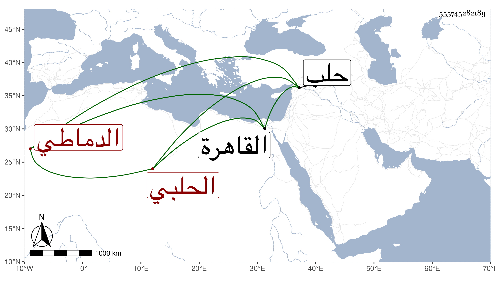

0902Sakhawi.DawLamic.ITO20230111-ara1.EIS1600.555745282189
Biography ID: 555745282189
إبراهيم بن محمد بن أبي بكر بن يوسف بن عمر بن أبي بكر برهان الدين الحلبي الدماطي نسبة لدوماط قرية من حلب على نحو مرحلتين من جهة الغرب نزيل القاهرة الشافعي سبط الجمال يوسف بن إبراهيم بن قاسم الزاهد طالب سريع الكتابة خفيف الحركة بعيد عن الضبط والإتقان والفهم قدم القاهرة بعيد سنة خمس وأربعين وكتب ذيلا على طبقات الشافعية أكثر فيه الاستمداد مني وكبره بكثير من المهملين وأفرد حدودا وتعاريف في مجلد ورام من شيخنا تقريظه له فما تيسر وقد أخذ عنه شرح النخبة وغيرها وتردد للقاضي علم الدين وقتا وسمع علي الشمني وغيره أشياء وكتب الطباق ودار على الشيوخ ولم يتأهل في الفن ولا كاد . مات بعد الخمسين أظنه في سنة تسع بالبيمارستان المنصوري عن نحو أربعين سنة فتفرقت أوراقه فلم ينتفع بها عفا الله عنه .
